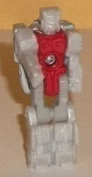
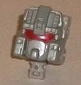
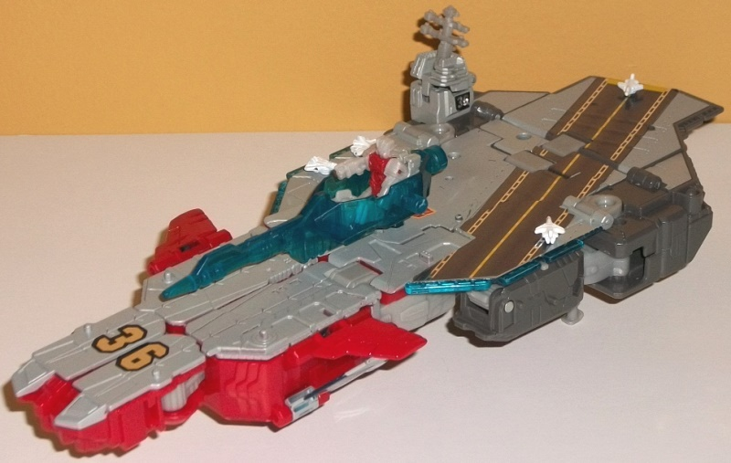
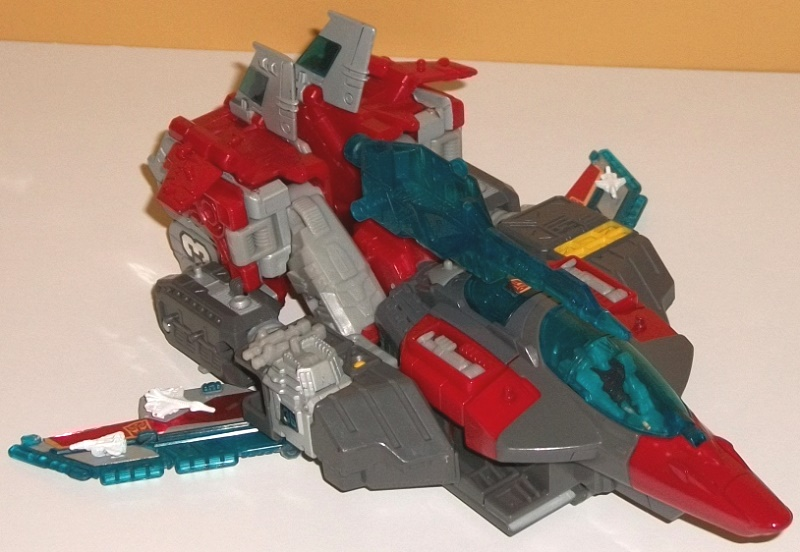
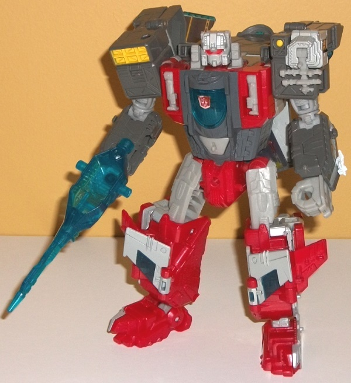

Allegiance
: Autobot
Size
: Voyager
Difficulty of Transformation to Carrier
:
Easy
Difficulty of Transformation to Jet
:
Easy
Color Scheme
: Moderately dark gray,
moderately dark red, transprarent turquoise, light flat gray, and some
light milky gray, yellow, red, and white
Rating
: 7.3


Although Broadside is
largely a completely new mold, he does share a few parts with
Titans
Return Alpha Trion
, and one of those parts is the robot mode of the
Titan Master. Blunderbuss' robot mode-- in terms of sculpt-- is identical
to Alpha Trion's Titan Master Sovereign. The difference is, for Blunderbuss,
the colors are a LOT more boring-- he's almost all that very blah light
milky gray, with some fairly dark red used for the chest. There's no paint
apps whatsoever in this mode, so the contrast between the dark red and
the rest of Blunderbuss is pretty much all you get as far as the color
scheme goes. The mold change that's been made to Blunderbuss is, of course,
the head mode, which certainly looks a lot like Broadside's head. Since
Broadside's noggin already was pretty much the shape of the usual boxy
Titan Master legs and arms near the back, his headshape looks pretty normal,
and unlike many Titan Masters doesn't have obvious limbs sticking out a
little from the back portion of the head. The mold detailing is also really
well-done on Broadside's head, with very crisp detailing that takes the
G1 basics and "fleshes them out" with more intricate bits. He's got a red-painted
visor, with the rest of the head having an angular, fairly square "helmet",
with tons of little divots on the forehead and sides of the faceplate (which
itself has a "chin"). It really the head look spiffy despite the color
scheme. (And speaking of the colors, despite there being light milky gray
plastic on the robot mode, the head is entirely painted in a flatter gray
which looks slightly better.)



Broadside's first alt
mode is an aircraft carrier and it. Looks. GREAT. It's pretty much got
all the right proportions when looked at from most angles, the only thing
that really stands out to me is that the tower is a bit small proportionally.
It's certainly "taller" than an actual aircraft carrier as a result of
Broadside having other modes, but most of it is fairly minimal. Yes, you
can see the bottoms of the lower arms on the sides, but they peg into place
pretty well and fit the general silhouette, so that's a pretty minimal
issue at best. There's also little wings on the sides, near the front,
that are a side effect of the jet mode, but again they fit in with the
general silhouette and are only a minor issue. The bigger issue is that
from any remotely rear view you can see the nose of the jet cockpit sticking
out underneath the rear end rather obviously-- in fact it sticks out so
much that if you don't have the three stands flipped out on the bottom
this mode won't stay level because the cockpit window bump goes lower than
the rest of the mode. As for the rest, though-- this mode is SOLID. Obviously
it's quite flat up top, with some large relatively detail-free areas but
some intricate mold detailing near the front for jet "takeoff and landing"
stripes, and the tower has impressively intricate mold detailing as well.
There's some pretty prevalent foil stickers used-- a long "air strip" diagonally
across the biggest flat portion of the mode, along with an Autobot symbol
near the center of this mode and a "36" near the front and a smaller "36"
on the side of the tower. Unfortunately the foil stickers are just cheap-looking,
and particularly around the area where the mode folds over itself the stickers
can fray slightly there if you're not careful. As far as color scheme,
there's plenty of flat gray along the top of this mode-- all paint, impressively--
which looks right-in-place on an aircraft carrier. Below there's some darker
gray near the rear and some somewhat dark red below the front section.
(It should be noted that the red paint is noticeably lighter than the red
plastic, which is a bit of a mis-match). There's a titch of light milky
gray-- mostly on the top of the tower and a few other minor connector spots--
which looks pretty blah, but thankfully isn't used much in this mode. There's
a bit of transparent turquoise which peaks out juust a bit from beneath
the side bits as well, but is mostly hidden in this mode. Overall it's
not a spectacular color scheme, but it's not clashy either and certainly
fits the alt mode pretty well. Broadside has a TON of Titan Master posts
available in this mode-- two on the very front section, two on the red-rimmed
section right behind those front sections, six on the main body of this
mode, and two on each side of this mode, on the parts that become the robot
lower arms. Beyond that, Titan Masters Broadside also comes with white-painted
(non-transformable) mini-replicas of the Combiner Wars Aerialbots that
can peg into a Titan Master port! They're really cool extras, though they're
sooo tiny they're also pretty easy to lose. There's also a transparent
turquoise gun that can plug into the center of this mode, which has space
for a Titan Master to sit in. One last nifty thing about this mode-- the
tower can open up for another Titan Master to sit in.
Broadside's other mode
is a jet... at least theoretically? This is a REALLY weak jet mode. The
strong parts are the cockpit and nosecone, which are pretty solid overall
(and there's enough room in the cockpit for a Titan Master to sit in),
and the wings-- though too low overall on the body-- are of an okay size.
They could stand to be a bit bigger, but that transparent aquamarine topped
with some light gray and the foil stickers looks pretty good. The body
though... it's pretty awful. This was definitely the mode given the least
priority out of the three. The main body is mostly just the robot mode
shoulders slid down and the robot mode legs slid up a bit with the feet
rotated away and the little tail wings rotated out. I mean you can see
a pretty obvious gap in between the two halves of the back area since those
halves become the legs-- seriously, they couldn't even clip together?!--
and the arms on the sides aren't very aerodyanmic either. There isn't any
back end to the mode either, with no thrusters or anything of the like
visible. I will say that the color scheme is definitely more varied in
this mode, with a darker gray now more apparent, though there is some of
that blah light milky gray plastic used on what becomes the upper legs
of the robot mode as well as on the stands used for carrier mode. The increased
amount of dark red really helps to make this color scheme pop a bit more,
and there's also a fair amount of that transparent turquoise on the cockpit
windows, the wings, and on part of the tailfins. For accent colors, there's
a bit of yellow on what becomes the robot shoulders. Overall it's not exactly
an amazing color scheme, but it's fairly good and very "Auto-boty". Broadside
also has more Titan Master posts solely available in this mode-- two near
the sides of the cockpit windows, one on each of the rear red wings, and
two on each of his main wings. The gun can plug right into the middle of
this mode, just like in carrier mode.
Broadside's robot mode
looks pretty boss, and is pretty chunky (in a good way). Some nice thick
legs (partially borrowed from Alpha Trion), wide shoulders and thick arms,
and a fairly wide chest with a faux cockpit window in the middle of it.
It definitely gives him that "big bruiser" look he's usually had. The wings
behind the elbows are a bit oddly placed, but at least they can fold back
some and out of the way. There's also a pretty big backpack made out of
the jet cockpit and nosecone, but thankfully it only looks a bit odd from
a more top-down angle and doesn't get in the way of articulation. Otherwise
all the alt mode parts fit on Broadside pretty well and either become part
of his overall silhouette (the tower on the shoulder, the wings on the
legs) or are folded away pretty well. So much of the robot mode detailing
and colors are revealed in the jet mode, I don't have a whole lot to say
about those aspects of him; there isn't much new revealed for this mode.
By pressing in on the faux cockpit you get little side bits to pop up on
the sides of where the head plugs in, which look a bit like missile pods--
a nice touch, given his first alt mode. The fists also slide out of the
lower arns and look pretty cool with little two-pronged "claws" hanging
off the wrists, but unfortunately they leave the lower arms completely
hollow. There's a hole in the top of each shoulder for you to plug Broadside's
gun into, though he can hold it in his hands just fine as well. For articulation
Broadside can move at the neck, shoulders (at three points), elbows (at
two points), inwards at the wrists, and at the hips (at three points),
knees, and ankles (at two points, back-and-forth). He could've used a bit
of more articulation in the knees (his transformation pretty much makes
waist rotation impossible), but other than that he's pretty poseable.
Broadside's two-outta-three.
His robot mode is excellent, fairly characterful, and proportional, and
his carrier mode is also pretty darned good, with some extra little Aerialbot
accessories to boot. However, his jet mode is just
awful
, with the
nosecone and to a lesser extent the wings being the only good parts of
that mode-- the rest just looks waaay too obviously like the robot mode
folded up a little. It's about time this guy got an upgrade, so if you
want him here's your chance-- just forget about the horrible jet mode.
Keep him in between robot and carrier modes and he's great.
Review by Beastbot